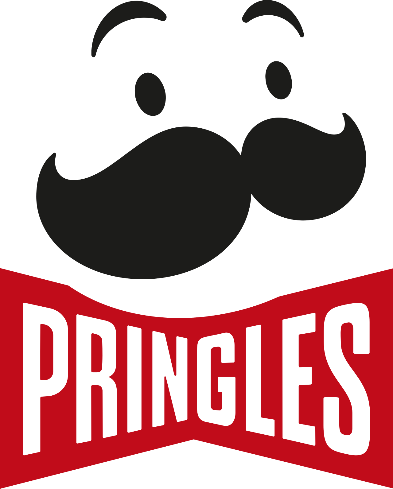
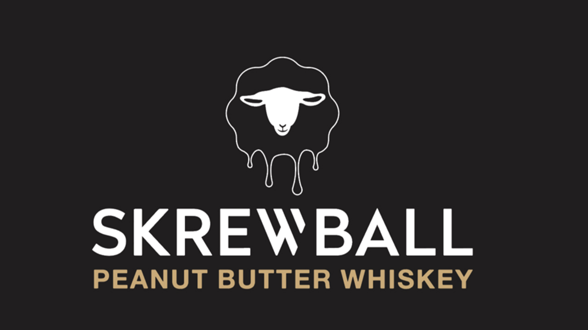
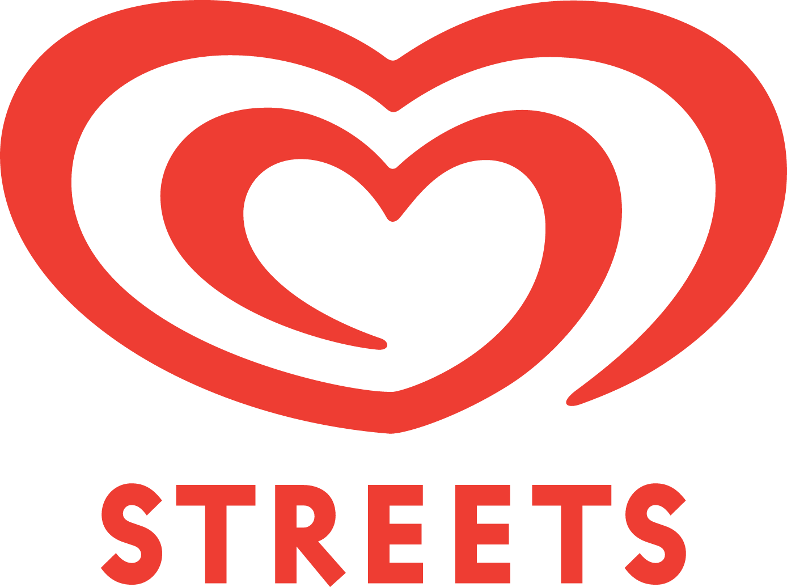

With 7 years of experience, I have produced content for global brands. Developing hundreds of landing pages, coordinating direct marketing campaigns, and creating analytical dashboards. I am an early adopter of AI, using it to build automation tools.



Using Zapier, Retool, JavaScript, and AI to simplify and automate business processes and analytics.
For training, education, and promotions following strict branding guides and stakeholder feedback.
Across web copy, mobile optimization, social media content, images, infographics, and short-form video.
Project Description: Manufacturers like PPG and AHE needed a way to train hardware store staff without taking them away from customers for long meetings. I built digital landing pages and an app that allowed staff to learn about products quickly on their phones.
Project Description: Unilever Food Solutions needed a faster way to tell thousands of pubs and clubs about new products and deals. I moved their marketing from paper to digital by managing large email and SMS lists and building mobile sales tools.
Project Description: When Skrewball Whiskey launched in Australia, I hired the promotion staff and gave them the route plans and digital tools they needed to visit the best venues. I also filmed the launch events so the brand could see the success on the ground.
Project Description: Creating marketing landing pages usually takes hours of writing and design work. I built Stakaroo to automate this process using AI. A user simply enters their business details, and the app generates professional copy, AI images, and a live webpage in minutes.
Frontend: Vue.js 3, HTML, CSS, JavaScript.
Backend: Firebase.
AI: Gemini API (text) and Google Vertex AI (images).
Project Description: I built Suade to turn messy medical PDFs into a visual "health dashboard." It extracts medical data from the documents and shows the user their health trends over time, like a Spotify Wrapped for their body.
Data Extraction: Google Document AI & Cloud Healthcare NLP.
Processing: Python.
Environment: Google Cloud Platform (GCP).